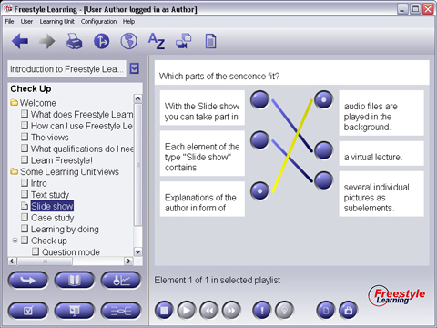

Selecting a Relator Element from the Structure Tree will display the question or any instructions in the top area of the Content Panel. Below, several items will be displayed to left and to the right. Your goal now is to connect the items on the left side with the correct items on the right side. To do so, press the blue button next to the left item, then pressing the correct buttons next to the right elements. The connections will be displayed as a yellow line. To deselect, first press the left and then the right element again and the yellow line disappears.

Additional View Specific Element Interaction Buttons (only in Training Mode)
|
Grafical Hint | Invokes a grafical Hint or comment from the author |
|
Audio- / Video-Hint | Invokes a Audio- or Video-Hint from the author (only if author activated) |
Back to Main Help Page